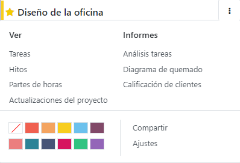
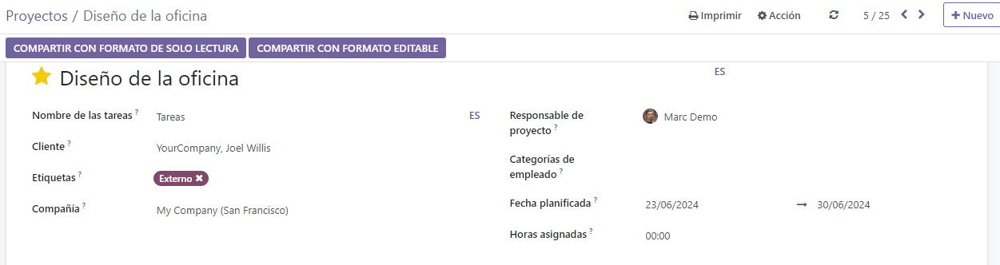

Gestión de proyectos¶
Proyecto de Odoo usa el sistema de gestión de proyectos Kanban. Esto significa que todos los proyectos se desglosan en tareas que se categorizan en un tablero de acuerdo a la fase de produción en la que se encuentren.
¿Sabía que?
La palabra Kanban viene del japonés y se refiere al método de gestión «tablero visual».
Configuración¶
Abra la aplicación Proyecto y haga clic en Crear para comenzar un nuevo proyecto. Introduzca un Nombre para su proyecto y haga clic en Crear proyecto.
Puede personalizar sus proyectos desde el tablero haciendo clic en el botón desplegable de alternar (⋮) en la tarjeta de su proyecto.
Esto activa un nuevo menú que se divide en cuatro partes:
Vista: vea un resumen de los componentes de su proyecto tales como sus Tareas, Objetivos y las Actualizaciones del proyecto. Dependiendo de las aplicaciones que tenga activadas, tendrá más opciones disponibles, como Documentos. Puede encontrar todos los archivos subidos en este menú, así como en la aplicación Documentos, en Proyectos;
Reportes: analice el progreso y rendimiento de su proyecto con gráficos y estadísticas;
Color: ponga una línea de color del lado izquierdo de la tarjeta para reconocer fácilmente su proyecto;
Ajustes: puede cambiar lo siguiente:
el Nombre del proyecto;
el Nombre de las tareas que le pertenecen a ese proyecto;
el Cliente para quién es el proyecto;
las Etiquetas que usa para los filtros;
la Empresa responsable del proyecto;
el empleado asignado como Gerente del proyecto;
la Fecha planeada del proyecto;
las Horas asignadas totales para ese proyecto.
Además, puede marcar el proyecto como Favorito, permitiendole encontrarlo usando el filtro Mis favoritos en la vista Kanban;
Más ajustes están disponibles en la pestaña Ajustes. La mayoría están solo disponibles dependiendo de las aplicaciones activadas.
Planificar actividades¶
Puede planificar actividades por proyecto (por ejemplo, Llamada, Reunión, etc.) haciendo clic en el ícono de reloj en un proyecto. Aparecerá una lista con actividades ya planeadas y le permitirá planear actividades nuevas haciendo clic en + Planificar una actividad. En la ventana emergente, seleccione el Tipo de actividad, escriba un Resumen para esa actividad, una Fecha límite, y asígnela a un empleado. De acuerdo con el Tipo de actividad, puede tener disponibles opciones adicionales.
Nota
Si una actividad ya está planeada, el ícono puede cambiar a un teléfono, un grupo de personas u otro.